From a mountain village in Jiangxi to Sapporo, Tokyo, Shanghai, a year on the road across four continents, and now Düsseldorf. Every step took me further from where I started, and closer to the people I met along the way.
I grew up in a mountain village in south China. I was the first in my family to go to university, the first to study and work abroad, and the first to travel the world. Every chapter since has followed the same four steps.
I grew up in my grandparents' village in southern Jiangxi. Like many families there, my parents worked in the factory cities of the south, and at times seven or eight of us grandchildren lived under my grandmother's roof. My grandfather was proud to be a farmer. When he asked why reading made me so happy, I told him: you plant seeds and harvest rice; I plant words and harvest joy. He didn't fully understand, but from then on studying earned me a pass on some of the farm work.
Around the age of ten, the village school principal took me into town on his motorcycle for an essay competition. For the first time I saw a world bigger than the village: confident city kids who came over to talk to me. In fifth grade I wrote down a dream: to travel around the world.
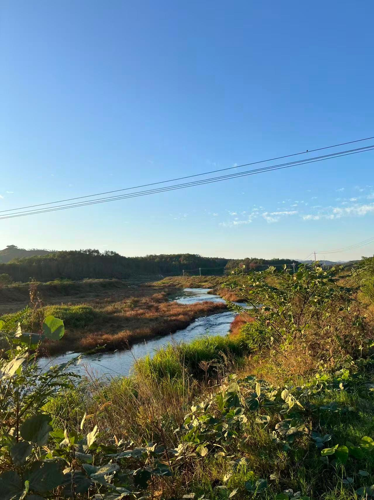
In middle school I fell in love with English, and my teacher kept telling me to go out and see the bigger world. The summer before high school I worked on a shoe-factory production line in Dongguan, standing at the same station every day. It showed me clearly which life I did not want to choose by default.
My parents came home to open a small shop so they could support my studies. With their care, I became the first in my family to go to university, in Chengdu, far from home.
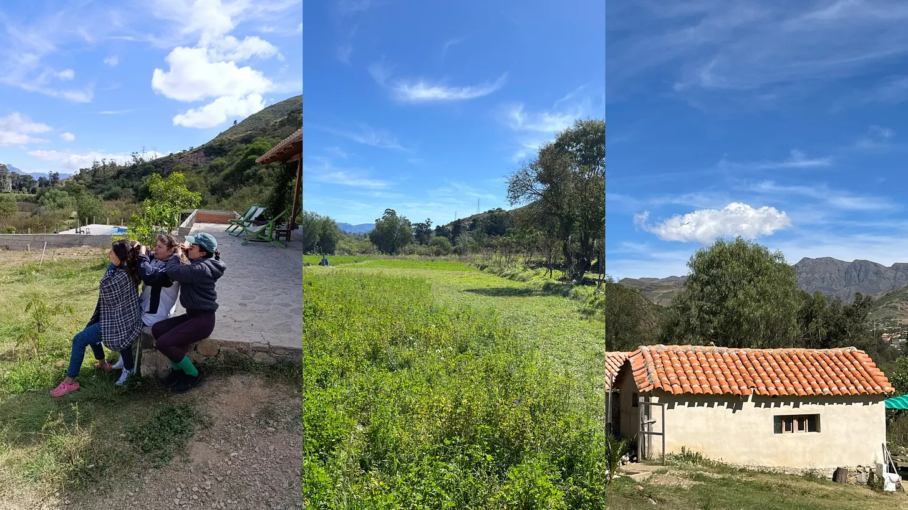
A chance at university took me across the sea to Hokkaido for my master's. My field research was with immigrant students in Japanese schools, on language, identity and belonging. To pay my way I worked part-time in a Korean barbecue restaurant, an Italian restaurant, an international hotel café and as an interpreter in a high-end department store. Japanese service culture taught me to read what a guest needs before they say it.
In Tokyo I joined YRGLM as their first foreign sales hire. Senior colleagues trained me hands-on, and I rotated through business development, marketing analysis and inside sales.
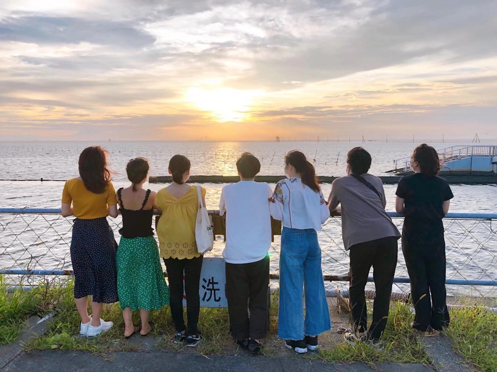
At Rakuten I had never worked in FMCG or lived in Shanghai. My method was simple: learning, asking, absorbing, monitoring. Within six months my manager trusted me to lead a competitive bid, and we won an exclusive distribution mandate against two agencies. I went on to manage eight Japanese brand partnerships to 132% of target. Work hard, play hard: I once submitted a proposal at 10 pm, then flew to Laos for a holiday.
At Nomura Research Institute I moved to the strategy side, building the market analyses and entry strategies that Japanese manufacturers used to decide where to go next.
Shanghai also opened the door to a much bigger world. I became close friends with people from all over the globe, and our conversations went far beyond the mainstream values I grew up with in Asia: death and vitality, equality, education, passion for life, freedom, relationships, and what it really means to have seen the world. Those friendships changed how I think, and they planted the seed for the year that came next.
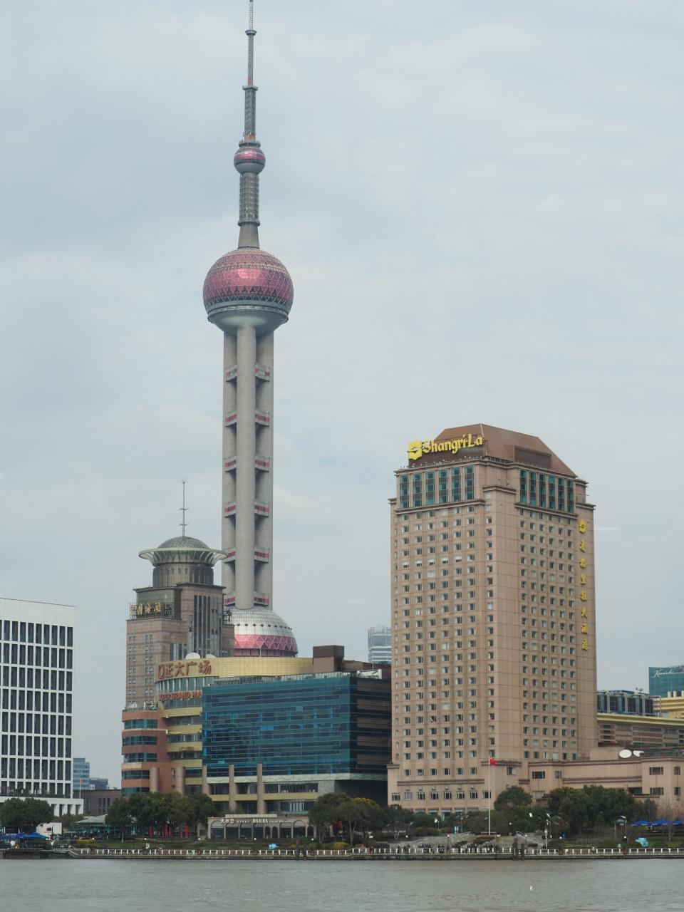
In 2025, with the dream from fifth grade still in my pocket, I gave myself one year: Europe, South America, the US and Asia, with freelance market research in my backpack. I wasn't looking for a gap. I was looking for people.
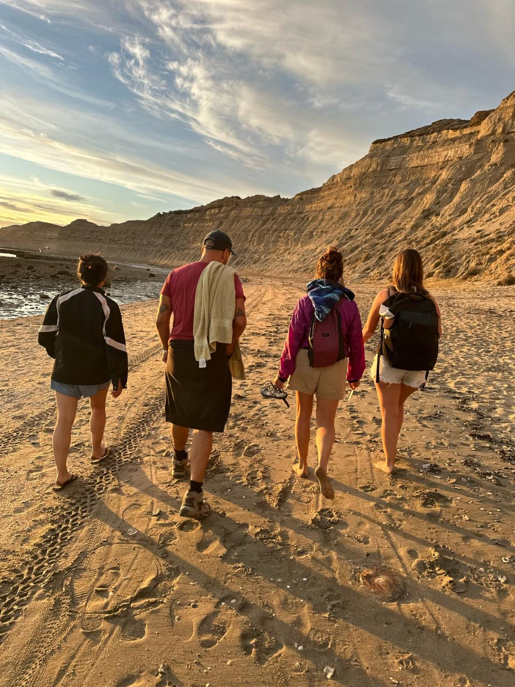
Buenos Aires was my first stop in South America. A friend brought me into her family's reunion in Mar del Plata, a big family organised around a grandmother, where daughters argued openly with their parents and every mother pushed her children to live their own lives. Then five of us drove from Buenos Aires to Patagonia.
Days in a car do something that meetings never do. We planned routes, solved problems, argued, laughed, and by the end it felt as if we had known each other in another life.
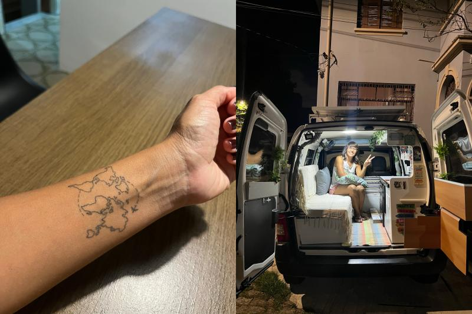
I think I came to Brazil just to meet her. After a life that broke and rebuilt her, she gave up almost everything, tattooed a world map as her new world, and bought a camper van as her new home.
When I'm honest with myself, honest people seem to find me. She taught me an order I still follow: understanding first, then storytelling.
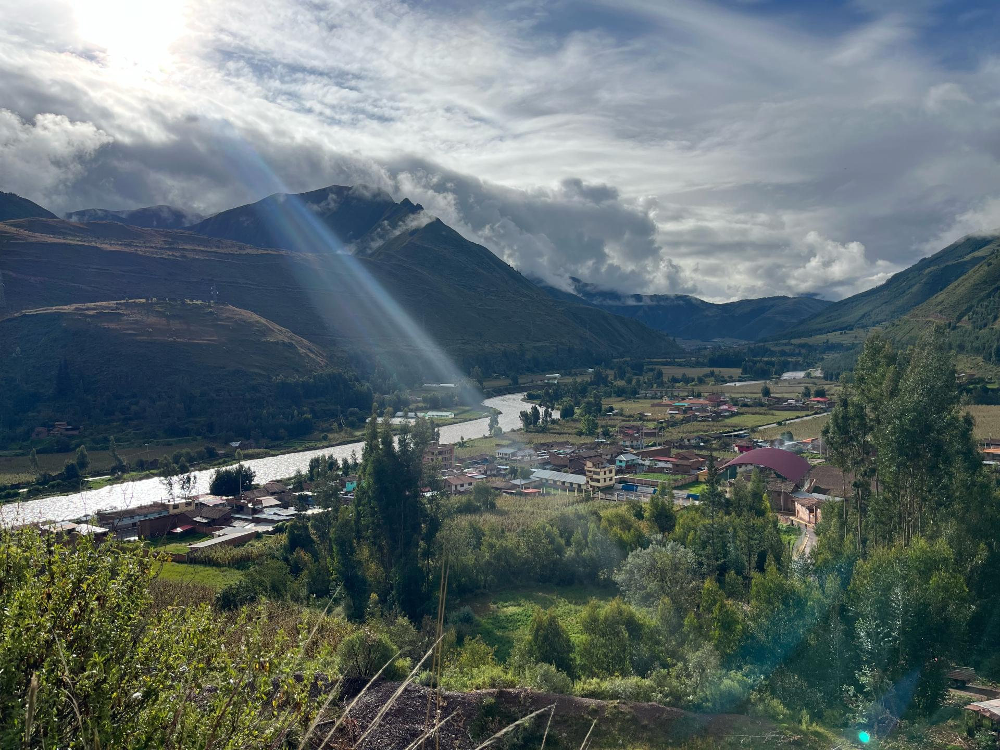
I volunteered at a dog shelter run by a writer who had built it with his friends. His life was simple: care for the dogs, organise the volunteers, write his novels. Life can be that simple, if you choose it.
I loved Lima's sunsets over the cliffs and the colour of Cusco's markets. A local host also showed me, from a bridge, the hillside settlements that most visitors never see. I hiked to Machu Picchu alone, and was never really alone on the way.
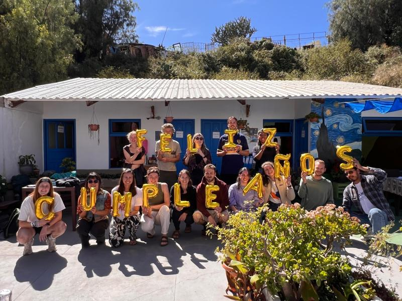
After a month of intensive Spanish, I could finally hold everyday conversations, and that changed everything. I went into the mountains and started hearing local people's stories in their own words. The people I met there were faithful, pure and deeply genuine.
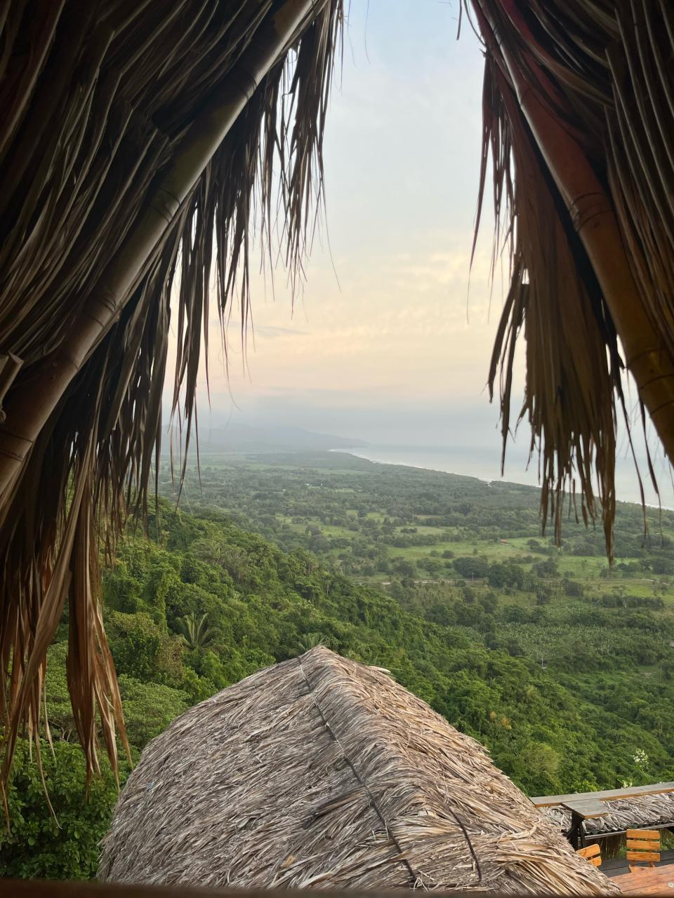
I volunteered as a bartender in a hostel high on a jungle mountainside above the Caribbean, reusing what I had learned in a part-time job in Tokyo. Listening, talking and smiling turned out to be the best skills for building connections.
Friends I had met along the whole South American route came to visit me there, including a couple I had first met in Buenos Aires half a year earlier. We talked philosophy over mojitos for an afternoon, and promised to meet again in Europe. We did.
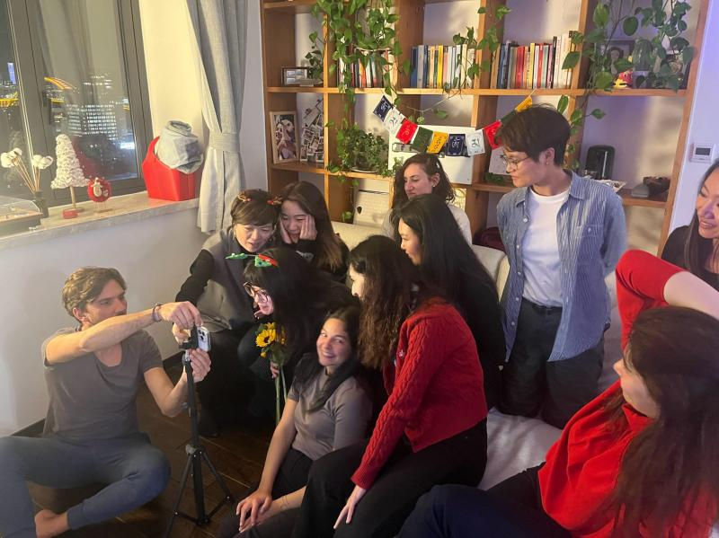
In Spain, Portugal, France, Germany and Denmark I exchanged writing and storytelling work for accommodation and visited friends I had made over the years. New York reminded me that culture is open to anyone who takes part, however long they stay. In Istanbul, friends who had lived there for three years showed me the city through their eyes.
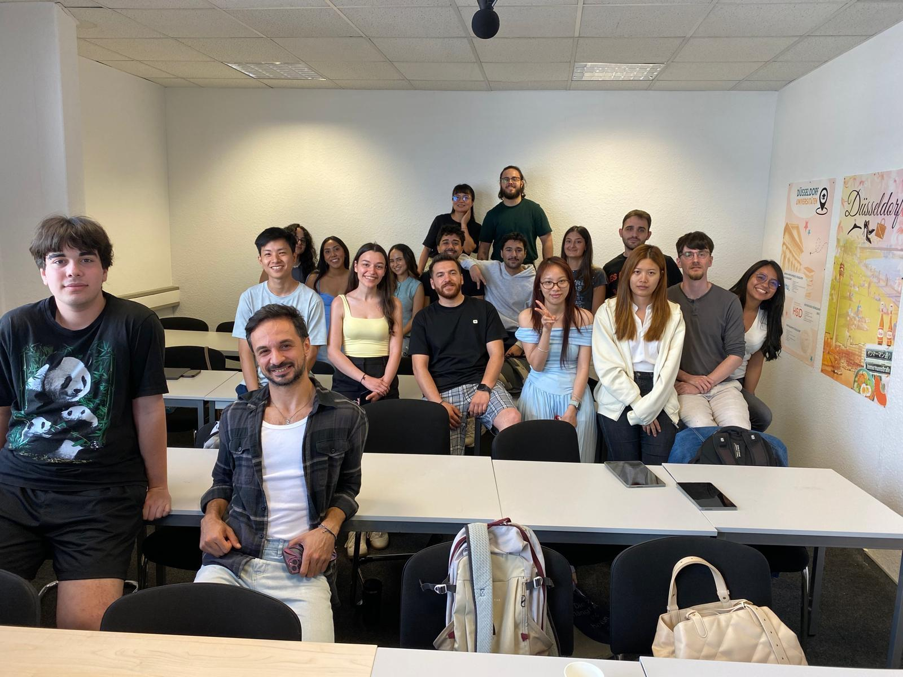
I moved to Germany and studied five hours a day in an intensive course, plus three to five hours of self-study after class, reading and talking with AI. The most interesting part was writing and speaking: a new language is a new way of thinking and of expressing values.
Most of my career has been stakeholder work: sitting between a brand headquarters and a new market, between strategy and the people who have to make it happen. Consulting taught me to read markets from data. This year taught me to read them from people.
I don't judge people quickly. I try to understand them first. That is what I bring to international business development, partner management and market expansion: the analysis, and the human context that makes it work.